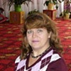

Дошкольное отделение лицея № 1451
В 2015 году 35% первоклассников Лицея № 1451 пришли из дошкольного отделения.
- 4-й Рощинский проезд, 5
- улица Лестева, 13
- улица Серпуховский Вал, 17
- Хавская улица, 19
- Городская улица, 7
Воспитатели
Воспитатели, которых чаще всего благодарят родители (отзывы и профили сотрудников взяты с официального сайта школы):
 Воспитатель
Баранова Надежда Николаевна
Воспитатель
Баранова Надежда Николаевна
3 благодарности |
Методист
Фомина Светлана Юрьевна
2 благодарности |
Воспитатель
Сауткина Алина Викторовна
2 благодарности |

Муз. рук.
Ханженкова Елена Сергеевна
1 благодарность |
|
Воспитатель
Денисова Марина Викторовна
1 благодарность |
Отзывы
Данные собраны c официального сайта школы и через форму для отзывов.
26 мая прошел наш выпускной в дошкольное отделение номер 3 Лицея №1451 на Городской улице д.7! Небыкновенный концерт! Столько разных танцев, песен и стихов! Спасибо огромное всем - всем- всем: Татьяне Анатлльевне, Светлане Юрьевне, музыкальному руководителю Елене Сергевне, Алине Викторовне! Праздник прошел на высоте!
Спасибо за воспитание наших детей, с которыми Вы были каждый день на протяжении нескольких лет, спасибо за вашу заботу!
Спасибо за воспитание наших детей, с которыми Вы были каждый день на протяжении нескольких лет, спасибо за вашу заботу!
Добрый день. Хочется выразить благодарность воспитателям и младшему воспитателю первой младшей группы подразделения 3, на Городской улице, Галине Владимировне, Марине Викторовне и Ольге Александровне. Весь учебный год наши дети были окружены заботой, любовью и постоянным вниманием. Атмосфера в группе, как дома. Дети всегда накормлены, умытые, чистые и довольные. За этот год была проведена большая образовательная работа с детьми, прочитано огромное количество книг, разучено большое количество стихов. Много чего нового наши дети узнали с нашими воспитателями. Было сделано огромное количество поделок и рисунков. Были проведены прекрасные праздники, на которых наши детки читали большое количество стихов, пели чудесные песни и танцевали веселые танцы. Очень жаль, что мы переходим в другую группу. Хотелось бы остаться с этим же педагогическим составом до самого конца посещения сада. Спасибо ВАМ, наши воспитатели, большое. Удачи Вам и крепкого здоровья! Мы Вас любим и очень благодарны Вам за воспитание за наших детей.
Уважаемые педагоги , от всей души поздравляем Вас с международным женским днем! Вы у нас самые лучшие, заботливые и надежные! Желаем здоровья, вдохновения и благодарных родителей!
Выражаем огромную благодарность за организацию и проведение великолепного праздника для родителей, который мы посетили 4 марта. Такая вечеринка в русском стиле пришлась по душе родителям и детям: потрясающий сценарий, великолепная постановка, душевная и волшебная работа с детьми, яркие костюмы, зажигательные частушки, стихи, пословицы, поговорки про маму. Спасибо Вам : Алина Викторовна, Светлана Юрьевна, Елена Сергеевна и Татьяна Анатольевна!!!
Семья Камышовых.
Выражаем огромную благодарность за организацию и проведение великолепного праздника для родителей, который мы посетили 4 марта. Такая вечеринка в русском стиле пришлась по душе родителям и детям: потрясающий сценарий, великолепная постановка, душевная и волшебная работа с детьми, яркие костюмы, зажигательные частушки, стихи, пословицы, поговорки про маму. Спасибо Вам : Алина Викторовна, Светлана Юрьевна, Елена Сергеевна и Татьяна Анатольевна!!!
Семья Камышовых.
Очень хочу искренне поблагодарить педагога дошкольного отделения на ул. Городской д.7, нашу любимую Надежду Николаевну Баранову! Ее многолетний опыт работы с детьми бесценен! Таких воспитателей в детских садах , к сожалению, осталось очень мало, она умеет найти подход к каждому ребенку, очень доброжелательная и ответственная. Это очень важно, когда ты работаешь с маленькой личностью, которая впитывает любые эмоции, действия и слова, а Надежда Николаевна правильно помогает рассортировать это все в головах наших деток. Я точно знаю, что она живет нашими детьми, думает о них постоянно, в выходные дни скучает по ним, она очень любит свою работу-это главное, это ее жизнь!!! Каждое утро мой сын идет в детский сад с желанием общения и интересом. Я знаю, что оставляю его в надежных руках, спокойно занимаясь своими делами.В первую очередь-это заслуга нашего педагога. Желаю всем, чтобы у них были такие воспитатели в детском саду!
Уважаемая, Надежда Николаевна, крепкого Вам здоровья, успехов в таком нелегком, но очень важном труде! Нам есть, чему учиться у Вас! Всегда помните, что мы Вас ценим!
Уважаемая, Надежда Николаевна, крепкого Вам здоровья, успехов в таком нелегком, но очень важном труде! Нам есть, чему учиться у Вас! Всегда помните, что мы Вас ценим!
Если вы нашли ошибку или неточность, пожалуйста, сообщите нам об этом.
Ученик, выпускник или родитель? Оставьте отзыв о детском саде.